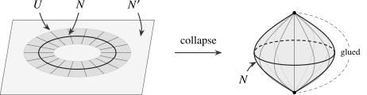

Let us make Pontryagin’s construction from the introduction precise, so as to see what has to be modified in the absence of a framing. Suppose a closed \(n\)-manifold \(M\) is embedded in \(\R ^{n+k}\) and that its normal bundle has been trivialized, so that \(M\) admits a tubular neighborhood identified with \(M \times \R ^k\). Collapsing everything outside this tubular neighborhood gives a pointed map \[ S^{n+k} \longrightarrow (M \times \R ^k)^+ \cong M_+ \wedge S^k \longrightarrow S^k, \] where the last arrow is induced by the map \(M\to \pt \). After stabilization, this gives an element of the stable stem \(\pi _n(\S ) = \pi _0\Hom _{\Sp }(\S [n],\S )\). Without a framing, the collapse map still exists, but its target must account for the varying normal directions. Thom’s remedy is to replace the target \(S^k\) by a pointed space built out of the normal bundle itself, obtained by compactifying each fiber separately and then gluing all of the resulting points at infinity into a single basepoint.
Construction 10.1.1 (Fiberwise one-point compactification). Let \(p\colon E \to X\) be a real vector bundle of rank \(n\). The linear action of \(\GL _n(\R )\) on \(\R ^n\) extends to a continuous action on its one-point compactification \(S^n=\R ^n\cup \{\infty \}\) fixing \(\infty \), since \(\|gv\|\geq \|v\|/\|g^{-1}\|\). We define the fiberwise one-point compactification of \(E\) as the associated bundle \[ S^E := \mathrm {Fr}(E)\times _{\GL _n(\R )}S^n, \] where \(\mathrm {Fr}(E)\) is the frame bundle of \(E\); compare Proposition 9.2.7 and its real analogue. Concretely, \(S^E\) is obtained from \(E\) by one-point compactifying each fiber, and it restricts to \(U\times S^n\) over any open subset \(U\subseteq X\) over which \(E\) is trivial.
The space \(S^E\) comes equipped with a map \(S^E \to X\). Since the action fixes \(\infty \), the ‘points at infinity’ assemble into a continuous section \(s_{\infty }\colon X \to S^E\).
Definition 10.1.2 (Thom space). Let \(p\colon E \to X\) be a real vector bundle. We define the Thom space \(\Th (E)\) as the quotient of \(S^E\) by the points at infinity: \[ \Th (E) := S^E/s_\infty (X). \] We regard this quotient as a pointed topological space; when \(X\) is empty, this is \(\pt \) by convention.
Remark 10.1.3. Given a metric on \(E\), one obtains a homeomorphic description of \(\Th (E)\) as the quotient \(D(E)/S(E)\), where \(D(E)\) and \(S(E)\) denote the unit disk and sphere bundles with respect to the metric. The homeomorphism is given by sending a vector \(v\) to \(v/(1+\|v\|)\) in each fiber. This is often taken as the definition, but has the disadvantage of requiring an auxiliary choice of metric.
Remark 10.1.4. If \(X\) is compact Hausdorff, the inclusion of \(E\) induces a homeomorphism \(E^+\cong \Th (E)\). Indeed, a neighborhood of the collapsed section in \(\Th (E)\) has compact complement because \(S^E\) is compact Hausdorff, so the quotient topology at the basepoint is the one-point compactification topology.
The Thom space of a trivial bundle is an \(n\)-fold suspension:
Example 10.1.5 (Suspension as Thom space). Let \(E = X \times \R ^n\) be the trivial rank \(n\) vector bundle over \(X\). Then \(\Th (E) \cong X_+ \wedge S^n \cong \Sigma ^n(X_+)\).
For a general rank \(n\) bundle \(E\), the Thom space \(\Th (E)\) differs from \(\Sigma ^n(X_+)\) only in the way the fiber spheres are glued to one another. We will therefore think of \(\Th (E)\) as a twisted suspension of \(X_+\), twisted by \(E\).
For example, the Thom space of the Möbius line bundle over \(S^1\) is \(\RP ^2\), whereas the trivial line bundle has Thom space \(S^1_+\wedge S^1\). We leave the identification with \(\RP ^2\) to Chapterexercise 10.3.
Example 10.1.6. Let \(E \to X\) and \(E' \to X'\) be vector bundles, and suppose that at least one of \(X\) and \(X'\) is compact Hausdorff. Their product \(E \times E' \to X \times X'\) is a vector bundle, called their external direct sum. There is a natural isomorphism of pointed spaces \[ \Th (E \times E') \cong \Th (E) \wedge \Th (E'). \] By symmetry, assume that \(X'\) is compact Hausdorff; the case of an empty base is immediate. Both Thom-space constructions collapse precisely the pairs in \(S^E\times S^{E'}\) with an infinite coordinate. It therefore suffices to check that the natural surjections \[ S^E\times S^{E'}\longrightarrow \Th (E\times E'), \qquad S^E\times S^{E'}\longrightarrow \Th (E)\wedge \Th (E') \] are quotient maps.
For the first, the map to \(S^{E\times E'}\) is locally the product of an identity with \(S^n\times S^m\to S^{n+m}\). This is a closed surjection with compact fibers, so its products are quotient maps. Composing with the quotient map to \(\Th (E \times E')\) proves the claim.
For the second, write \(q_E\) and \(q_{E'}\) for the quotient maps to \(\Th (E)\) and \(\Th (E')\). The map \(q_E\times \id _{S^{E'}}\) is a quotient map because \(S^{E'}\) is compact Hausdorff, while \(\id _{\Th (E)}\times q_{E'}\) is a quotient map because \(q_{E'}\) is a closed surjection with compact fibers. Composing these with the quotient map \(\Th (E)\times \Th (E') \to \Th (E)\wedge \Th (E')\) proves the claim.
Construction 10.1.7 (Functoriality of Thom spaces). Let \(p\colon E\to X\) be a vector bundle and let \(f\colon X'\to X\) be a continuous map. The pullback bundle comes with a commutative diagram
Since \(\widetilde {f}\) is a linear isomorphism on each fiber, it extends to a continuous map \(S^{f^*(E)}\to S^E\) preserving the sections at infinity, and so induces a pointed continuous map \[ \Th (\widetilde {f})\colon \Th (f^*(E))\longrightarrow \Th (E). \] These maps are compatible with identities and composition in \(f\). An isomorphism \(F\cong f^*(E)\) therefore also gives a map \(\Th (F)\to \Th (E)\).
We record two facts about the topology of Thom spaces.
Lemma 10.1.8. Let \(E\to X\) be a real vector bundle.
- (1)
-
If \(X\) is a cell complex, then \((S^E,s_{\infty }(X))\) is a relative cell complex, with one \((m+n)\)-cell for each \(m\)-cell of \(X\) over which \(E\) has rank \(n\).
- (2)
-
If \(f\colon X'\to X\) is a homotopy equivalence between paracompact Hausdorff spaces, then the induced map \(\Th (f^*E)\to \Th (E)\) is a pointed homotopy equivalence.
Proof. For part (1), choose a cellular filtration \((X_\alpha )\) of \(X\). We construct a relative cellular filtration on \(S^E\) with stages \(s_{\infty }(X)\cup S^E|_{X_\alpha }\), starting with the whole section at infinity. Consider a cell attached to \(X_\alpha \) with characteristic map \(\chi \colon D^m\to X_{\alpha +1}\). Pulling \(E\) back along \(\chi \) gives a trivial bundle by the real version of Theorem 9.1.4, so pulling back \(S^E\) gives \(D^m\times S^n\). The corresponding \((m+n)\)-cell in \(S^E\) has characteristic map \[ D^{m+n} \cong D^m\times D^n \longrightarrow D^m\times S^n \longrightarrow S^E. \] Its boundary lands in the preceding stage: \(\partial D^m\times D^n\) maps to \(S^E|_{X_\alpha }\), while \(D^m\times \partial D^n\) maps to \(s_\infty (X)\). The two descriptions agree on their intersection. The interior maps homeomorphically onto the vectors in \(E\) over the new open cell, so each new \(m\)-cell of the base contributes one relative \((m+n)\)-cell. Moreover, at each attachment and each limit stage, the colimit topology agrees with the bundle topology; this can be checked locally in charts, using that product with the compact Hausdorff sphere \(S^n\) preserves quotient maps. This proves part (1).
Part (2) is left as Chapterexercise 10.1. □
We now carry out the collapse construction in the generality we need; it is used again in the proof of Atiyah duality in Section 11.3.
Construction 10.1.9 (Pontryagin–Thom collapse map). Let \(i\colon N \hookrightarrow N'\) be a smooth embedding of smooth manifolds without boundary, with \(N\) compact, and let \(\nu (i)\) denote its normal bundle. Choose a fiberwise metric and a tubular embedding \(j\colon D(\nu (i))\hookrightarrow N'\) of the closed unit disk bundle, whose differential along the zero section induces the identity on \(\nu (i)\); such an embedding is obtained by shrinking a tubular neighborhood and rescaling the metric. Identifying \(D(\nu (i))\) with its image in \(N'\), we obtain a pointed map \[ \PT (i)\colon N'_+ \to D(\nu (i))/S(\nu (i)) \cong \Th (\nu (i)) \] which restricts to the quotient map on \(D(\nu (i))\) and sends the complement of its interior to the basepoint; the identification of the target uses Remark 10.1.3. The map \(\PT (i)\) is called the Pontryagin–Thom collapse map. Its homotopy class is independent of the auxiliary choices: metrics can be joined by interpolation, and normalized tubular embeddings are isotopic after shrinking, by the proof of Hirsch (1976), Chapter 4, Theorem 5.3. These isotopies induce pointed homotopies of the collapse maps. If \(N'\) is equipped with a basepoint away from \(N\), we may choose the tubular neighborhood of \(N\) to avoid this basepoint, giving a pointed map \[ \PT (i)\colon N' \longrightarrow \Th (\nu (i)). \]

For a framed embedding, the normal bundle is trivialized and \(\Th (\nu (i)) \cong \Sigma ^k(N_+)\), so that we recover Pontryagin’s construction. In general the target depends on the normal bundle \(\nu (i)\). The next step is to make it independent of the manifold by passing to the universal bundle.
Example 10.1.10. Let us consider the Grassmannian \(\Gr _k(\R ^\infty )\) of \(k\)-dimensional subspaces of \(\R ^\infty \). By the real analogue of the Grassmannian classification theorem recorded in Remark 9.2.22, this space is a model for the classifying space \(BO(k)\) and classifies rank \(k\) real vector bundles over paracompact Hausdorff spaces. It is a cell complex by its Schubert cell decomposition; see Hatcher (2003), Proposition 1.17 and p. 34. The universal bundle \(\gamma _k\) over \(\Gr _k(\R ^\infty )\) has as total space \[E_k = \{(V,v) \in \Gr _k(\R ^\infty ) \times \R ^\infty \mid v \in V\}\] with the projection map sending \((V,v)\) to \(V\). The fiber over a point \(V \in \Gr _k(\R ^\infty )\) is the \(k\)-dimensional vector space \(V\) itself. By Remark 10.1.3, the Thom space \(\Th (\gamma _k)\) is the space of pairs \((V,v)\) where \(v \in V\) has length \(\leq 1\), modulo those pairs where \(v\) has length exactly \(1\).
Every rank \(k\) vector bundle over a paracompact Hausdorff space is pulled back from \(\gamma _k\) by Remark 9.2.22, so its Thom space maps to \(\Th (\gamma _k)\) by Construction 10.1.7. Composing with the collapse map, an embedding \(N\hookrightarrow N'\) as in Construction 10.1.9, with normal bundle of rank \(k\), therefore gives a map \(N'_+\to \Th (\gamma _k)\). As \(k\) varies, the Thom spaces \(\Th (\gamma _k)\) form a prespectrum:
Construction 10.1.11 (The prespectrum \(\MO ^{\pre }\)). Consider the canonical inclusion \[ \Gr _k(\R ^{\infty }) \hookrightarrow \Gr _{k+1}(\R \times \R ^{\infty }) \cong \Gr _{k+1}(\R ^{\infty }), \quad V \mapsto \R \oplus V. \] The pullback of \(\gamma _{k+1}\) along this inclusion is \(\ul {\R }\oplus \gamma _k\), and in particular we obtain a pointed continuous map \[ \Sigma (\Th (\gamma _k)) \cong \Th (\ul {\R }\oplus \gamma _k) \to \Th (\gamma _{k+1}). \] Taking the topological adjoint and then passing to underlying pointed animae gives the structure map \[ \sigma _k\colon \Pi _{\infty }\Th (\gamma _k)\longrightarrow \Pi _{\infty }\Omega \Th (\gamma _{k+1})\cong \Omega \Pi _{\infty }\Th (\gamma _{k+1}). \] Here we use the identification of topological loop spaces with loops of animae from Section 2.4. These maps turn the sequence \((\Pi _{\infty }\Th (\gamma _k))\) into a prespectrum, which we denote by \(\MO ^{\pre }\).
Applying spectrification (Proposition 4.3.29) to \(\MO ^{\pre }\) produces a spectrum, and this is the classical construction of \(\MO \) going back to Thom (1954). In the next section we define Thom spectra by colimits of families of sphere spectra. This construction also applies to virtual bundles, and Theorem 10.2.24 identifies the resulting \(\MO \) with the spectrum constructed here.